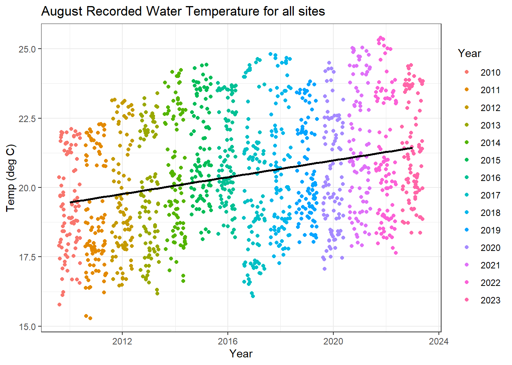
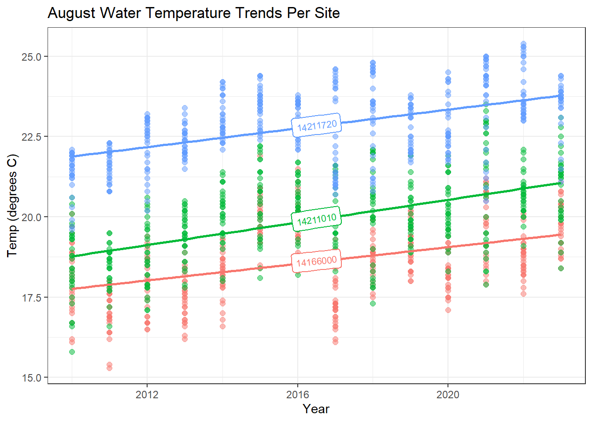
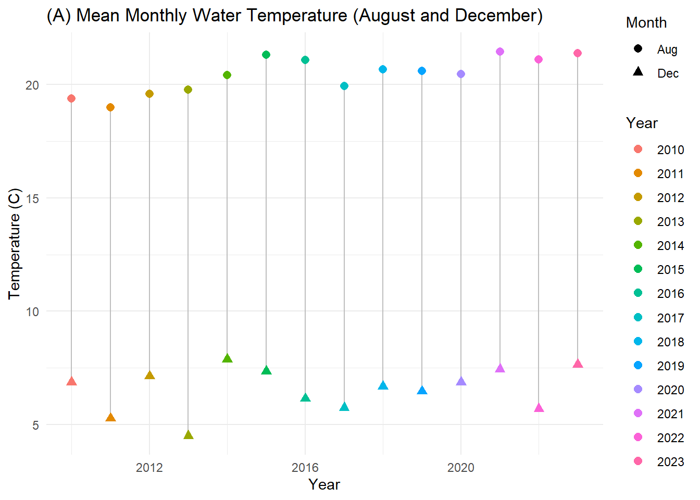
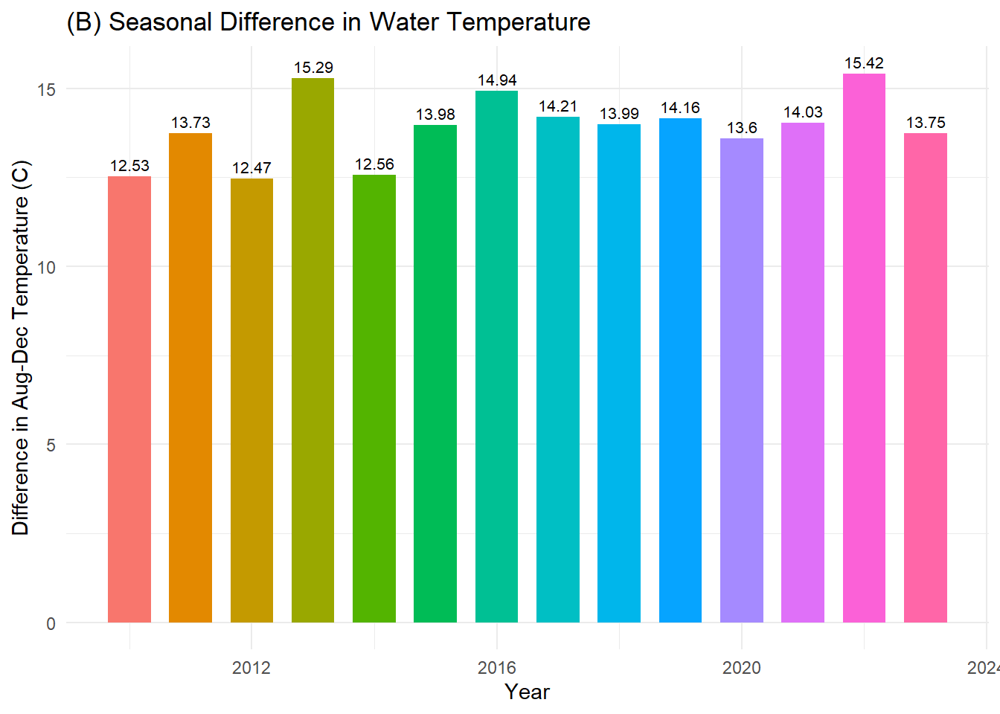
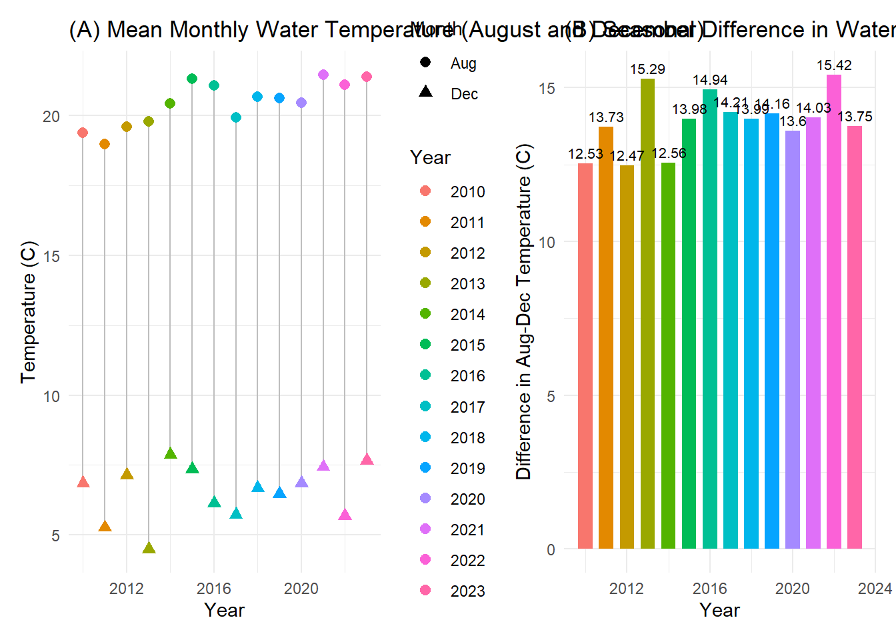

systemfonts and textshaping have been compiled with different versions of Freetype. Because of this, textshaping will not use the font cache provided by systemfonts
library(janitor)library(geomtextpath)
#install.packages("dataRetrieval")#library(dataRetrieval)#commenting out loading the data from NWIS #siteNumbers <- c("14211720", "14211010", "14166000")#parameterCd <- "00010" # water temperature#startDate <- "2010-01-01"#endDate <- "2023-12-31"#temp_data <- readNWISdv(siteNumbers, parameterCd, startDate, endDate)
Generating Data
# rename columns for clarity#colnames(temp_data) <- c("agency_cd", "site_no", "Date", "temp_C")# extract some date info for use later#temp_data$month = month(temp_data$Date, label=TRUE)#temp_data$year = year(temp_data$Date)# check by plotting#ggplot(temp_data, aes(x=Date, y=temp_C, color=site_no)) +#geom_line() +#labs(title="Stream Temperature at Willamette River Sites",# x="Date", y="Temperature (°C)", color="Site Number") +#theme_minimal()
Save & Load Data Frame
#save the dataframe#write_csv(temp_data, here("temp_data.csv"))#local data loadtemp_data_final <-read.csv(here("temp_data_final.csv"))
Plot Water Temperature Data
ggplot(temp_data_final, aes(x = month, y = year, fill = temp_C)) +geom_tile(color ="white", linewidth =0.5) +scale_fill_distiller(palette ="Blues", name ="Temp (C)") +labs(title ="Monthly Temperature Heatmap",x ="Month",y ="Year",fill ="Temperature (C)" ) +theme_minimal() +theme(axis.text =element_text(size =11),plot.title =element_text(face ="bold", size =14) )
Part I: Analysis of August Water Temperatures
a) Is there a trend in temperature in the month of August?
# get data for Augustaug_data <- temp_data_final |>clean_names() |>filter(month =="Aug")# is there a trend between year and temperature? Is the temperature changing over time?aug_lm <-lm(temp_c ~ year, data = aug_data)summ(aug_lm, digits =4)
Observations
1299
Dependent variable
temp_c
Type
OLS linear regression
F(1,1297)
113.4532
R²
0.0804
Adj. R²
0.0797
Est.
S.E.
t val.
p
(Intercept)
-284.4079
28.6214
-9.9369
0.0000
year
0.1512
0.0142
10.6514
0.0000
Standard errors: OLS
Yes, there is a significant relationship between the year and the water temperature in August. The p-value of the coefficient year is 0.0000 which is less than our alpha threshold of 0.05.
b) Is the trend positive (increasing) or negative (decreasing)?
aug_plot <-ggplot(aug_data, aes(x = year, y = temp_c, color =as.factor(year))) +theme_bw() +geom_jitter() +geom_smooth(aes(group =1),method ="lm",se =FALSE,color ="black") +labs(title ="August Recorded Water Temperature for all sites",x ="Year",y ="Temp (deg C)",color ="Year")aug_plot
`geom_smooth()` using formula = 'y ~ x'

Based on the plot above and the regression coefficient = 0.1512, the linear regression estimates that the August water temperature is increasing by 0.1512 degrees Celsius every year. However, this linear model has an R2 = 0.0804 and the figure shows clearly that the data is not obviously linear. Therefore, only 8% of the variation in temperature can be attributed to a difference in year, and year is not be the best variable to estimate or predict change in water temperature.
c) Are there different trends in each site?
# OLS regression for Site 14211720aug_1720 <- aug_data |>filter(site_no ==14211720)aug_1720_lm <-lm(temp_c ~ year, data = aug_1720)summ(aug_1720_lm, digits =4, model.fit =FALSE, model.info =FALSE)
Est.
S.E.
t val.
p
(Intercept)
-271.4474
23.3695
-11.6155
0.0000
year
0.1459
0.0116
12.5926
0.0000
Standard errors: OLS
# OLS regression for Site 14211010aug_1010 <- aug_data |>filter(site_no ==14211010)aug_1010_lm <-lm(temp_c ~ year, data = aug_1010)summ(aug_1010_lm, digits =4, model.fit =FALSE, model.info =FALSE)
Est.
S.E.
t val.
p
(Intercept)
-335.0182
26.8284
-12.4875
0.0000
year
0.1760
0.0133
13.2299
0.0000
Standard errors: OLS
# OLS regression for Site 14166000aug_6000 <- aug_data |>filter(site_no ==14166000)aug_6000_lm <-lm(temp_c ~ year, data = aug_6000)summ(aug_6000_lm, digits =4, model.fit =FALSE, model.info =FALSE)
Est.
S.E.
t val.
p
(Intercept)
-243.0310
26.1096
-9.3081
0.0000
year
0.1297
0.0129
10.0208
0.0000
Standard errors: OLS
aug_site_plot <-ggplot(aug_data, aes(x = year, y = temp_c, color =as.factor(site_no))) +theme_bw() +geom_point(size =2, alpha =0.5) +geom_labelsmooth(aes(label = site_no), fill ="white",method ="lm", formula = y ~ x,size =2.75, linewidth =1, boxlinewidth =0.4) +labs(title ="August Water Temperature Trends Per Site",x ="Year",y ="Temp (degrees C)",color ="Site") +guides(color ='none')aug_site_plot

Yes, there are differences in temperature trends between sites. At site 14211720, the linear model estimates that the water increases by 0.1459 degrees C per year. At site 14211010, the linear model estimates that the water increases by 0.1760 degrees C per year. At site 14166000, the linear model estimates that the water increases by 0.1297 degrees C per year. The figure above (“August Water Temperature Trends Per Site”) shows that each site has its own temperature trends. These results make sense, as each site likely has its own unique combination of upstream water flow, water depth, sun exposure, flow speed, et cetera.
Management Recommendations: Seasonal Water Temperature Changes
How large are the seasonal temperature differences, and do they change over time?
#|message: false#get data for August and Decembersummary_temp_data <- temp_data_final |>clean_names() |>filter(month %in%c("Aug", "Dec")) |>select(site_no, date, temp_c, month, year) #calculate mean water temp per month per year mean_temps <- summary_temp_data |>group_by(year, month) |>summarise(mean_temp =mean(temp_c), )
`summarise()` has grouped output by 'year'. You can override using the
`.groups` argument.
mean_temps
# A tibble: 28 × 3
# Groups: year [14]
year month mean_temp
<int> <chr> <dbl>
1 2010 Aug 19.4
2 2010 Dec 6.86
3 2011 Aug 19.0
4 2011 Dec 5.26
5 2012 Aug 19.6
6 2012 Dec 7.13
7 2013 Aug 19.8
8 2013 Dec 4.50
9 2014 Aug 20.4
10 2014 Dec 7.87
# ℹ 18 more rows
# Plot seasonal temperature meansmean_temps_plot <-ggplot(mean_temps, aes(x = year,y = mean_temp,color =as.factor(year))) +stat_summary(fun.min = min, fun.max = max, geom ="linerange", color ="grey") +geom_point(aes(shape =as.factor(month)), size =2.5) +labs(x ="Year",y ="Temperature (C)",title ="(A) Mean Monthly Water Temperature (August and December)",color ="Year",shape ="Month") +theme_minimal()mean_temps_plot

# plot annual difference in seasonal temperaturesdiff_plot <-ggplot(diff_temps, aes(x = year, y = temp_diff)) +geom_bar(stat ="identity", width =0.7, aes(fill =as.factor(year))) +geom_text(aes(label =round(temp_diff, 2), vjust =-0.5), size =2.8)+labs(x ="Year",y ="Difference in Aug-Dec Temperature (C)",title ="(B) Seasonal Difference in Water Temperature") +guides(fill ="none") +theme_minimal()diff_plot

library(patchwork)mean_temps_plot + diff_plot

Figure A above shows the difference in mean water temperature between August and December annually from 2010 through 2023. The seasonal temperature difference between August and December ranges from 12.47 deg C to 15.42 deg C, with a mean of 13.90 deg C difference. For conservation planning purposes, it is reasonable to estimate that the water temperature will decrease approximately 13-14 degrees between the summer and the winter this season. In addition, Figure B plots the water temperature difference over time. There are no clear outliers, and the distribution is relatively uniform. Therefore, it is expected that near-term seasonal water temperature decreases will follow a similar pattern. Even though the analysis of August and December data shows that the temperatures are increasing each year, they appear to be increasing at a consistent rate so that the seasonal change stays relatively constant.